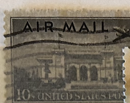
| SOURCE | TITLE| IMAGE MATCH | click to source page |
| eBay | Scott C34- Plane over Pan American Building- MNH 10c 1947- unused mint Airmail | eBay | 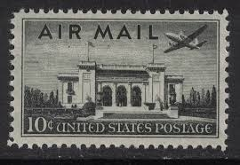 |
| eBay | US Stamp Scott C34 Air Mail Pan-American Building Used 10c 1947 (a6) | eBay | 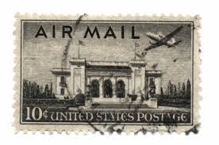 |
| eBay UK | Air Mail 10 Cent American USA Postage Stamp | eBay UK | 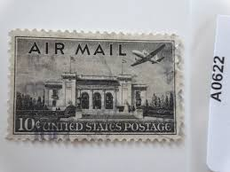 |
| Latinafy | United States Postage Sello Estados Unidos Air Mail 10 1947 | 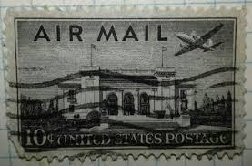 |
| HipStamp | C34 10 cents Pan-Am Building Stamp used F | United States, Air Mail Stamp / HipStamp | 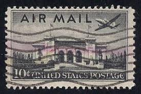 |
| HipStamp | United States Sc#C34 Used, 10c blk, Airmail 1941-1949 (1947) | United States, Air Mail Stamp / HipStamp | 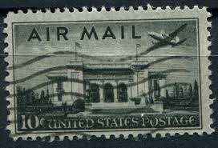 |
| Alamy | Washington, United States Of America. 17th Oct, 2025. United States President Donald J Trump greets President Volodymyr Zelenskyy of Ukraine at the West Wing Lobby entrance of the White House in Washington, | 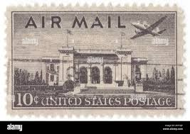 |
| Dreamstime.com | The Pan American Union Building is the Headquarters for the Organization of American States in Washington, DC Stock Image - Image of washington, landmark: 385874519 | 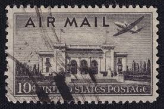 |
| Shutterstock | 7+ Hundred Office Building Letter C Royalty-Free Images, Stock Photos & Pictures | Shutterstock | 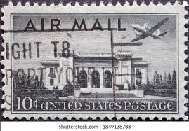 |
| iStock | Palace Of Governors Santa Fe New Mexico Us Postage Stamp Stock Photo - Download Image Now - iStock | 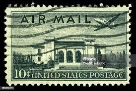 |
| Alamy | Washington, United States Of America. 17th Sep, 2019. Congressman-elect Greg Murphy (Republican of North Carolina) and his wife Wendy Murphy attend a ceremonial swearing-in ceremony at the United States Capitol in Washington, | 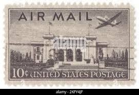 |
| HipStamp | C34 US Airmail 10c Union Building, used | United States, Air Mail Stamp / HipStamp | 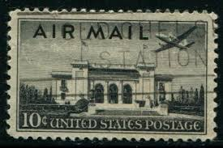 |
| Dreamstime.com | A Postage Stamp Printed in Ottoman Empire. Editorial Stock Photo - Image of passenger, cover: 236474518 | 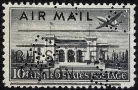 |
| lastdodo.com | Leon Helguera [1899-1970] Stamp catalogue - LastDodo | 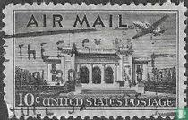 |
| Todocolección | estados unidos, 1947, palacio de la union pana - Buy Antique stamps of United States on todocoleccion | 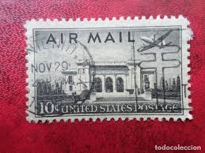 |
| Mystic Stamp Company | 04-14-1890 Pan American Union.indd | 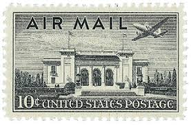 |
| inviting : letterpress boutique | inviting: vintage postage stamps of – inviting : letterpress boutique | 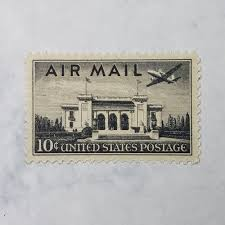 |
| CollectorBazar | Used Airmail USA - B17019 | 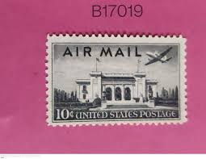 |
| Dennis R. Abel - Stamps for Collectors, LLC | C77 Delta Silhouette | Dennis R. Abel - Stamps for Collectors, LLC | 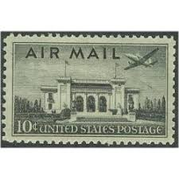 |
| Pngtree | 6,876 Commemorative Photo With Shadows Photos, Pictures And Background Images For Free Download - Pngtree | 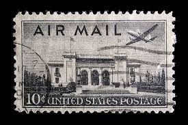 |
| Alamy | American postage stamps hi-res stock photography and images - Alamy | 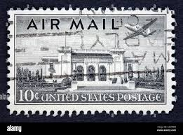 |
| iStock | Duty Honor Country West Point Military Academy Postage Stamp Stock Photo - Download Image Now - iStock | 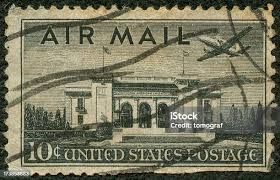 |
| Amazon.com | Amazon.com: USA 1947 Pan-American Building Air Mail Postage Stamp, Catálogo No C34 : Juguetes y Juegos | 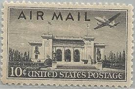 |
| iStock | Dulles Airport Stamp 1980s Stock Photo - Download Image Now - Eero Saarinen, Aerospace Industry, Air Traffic Control Tower - iStock | 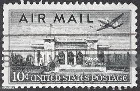 |
| HipStamp | Scott # C34 1947 10c blk Pan-Am Union Bldg. Plate Block - Upper Right - Mint | United States, Air Mail Stamp / HipStamp | 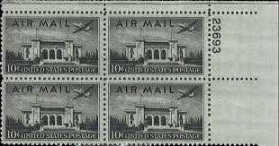 |
| Etsy | Washington Vintage Stamps - Etsy | 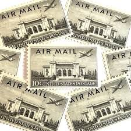 |
| Dreamstime.com | The Pan American Union Building is the Headquarters for the Organization of American States in Washington, DC Stock Image - Image of mansion, facade: 385874515 | 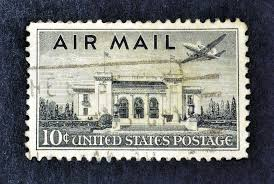 |
| ProBoards | Aircraft | The Stamp Forum (TSF) | 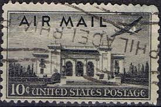 |
| information please ! why one stamp is more dark and other is light ? | 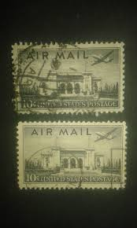 | |
| iStock | Airmail 5c 1928 Stock Photo - Download Image Now - 1928, Air Mail, Beacon - iStock | 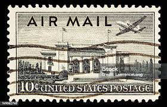 |
| eBay | Uncertified 10 Cent Denomination US Postal Stamp Plate Blocks & Multiples for sale | eBay | 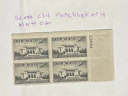 |
| HipStamp | SCC34 Airmail used | United States, Air Mail Stamp / HipStamp | 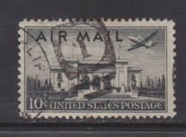 |
| eBay | C34, Mint NH Superb 10¢ With Graded 98 PSE Certificate Stuart Katz | eBay | 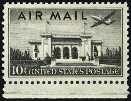 |
| iStock | Postage Stamp Stock Photo - Download Image Now - Air Mail, Automated, Collection - iStock | 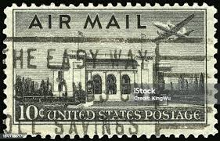 |
| Shutterstock | 29+ Thousand American Postage Stamp Royalty-Free Images, Stock Photos & Pictures | Shutterstock | 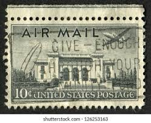 |
| Alamy | US 10c Airmail postage stamp from 1947 featuring the Pan American Union Building, Washington Stock Photo - Alamy | 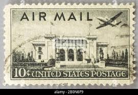 |
| Shutterstock | 33,286 America Postal Stamps Royalty-Free Images, Stock Photos & Pictures | Shutterstock | 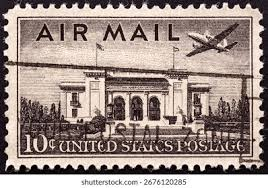 |
| eBay | C34, Mint NH 10¢ Misperfed Error * AIRMAIL STAMP * Stuart Katz | eBay | 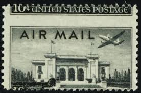 |
| ebid.net | USA 1947 Air Mail 10c Used Stamp. Airmail on eBid United States | 212862383 | 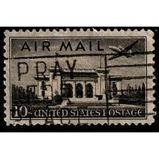 |
| eBay | USA Stamp Air Mail 10 Cents United States Postage | eBay | 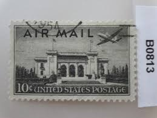 |
| eBay | Air Mail 10 Cent American USA Postage Stamp | eBay | 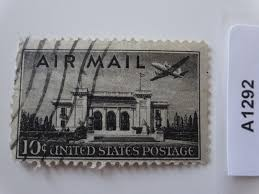 |
| eBay | Numbered Fancy Cancel US SN C34 - Beautifully Struck Number 35 | eBay | 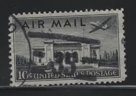 |
| TEN 10c Pan-american Building Airmail Stamp .. Pack of 10 Vintage Unused Postage Stamps. | Washington DC | Latin America Postage | Penpals - Etsy | 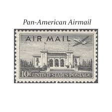 | |
| eBay | SCOTT #C34 1947 US Airmail 10¢ Pan-American Building Single Stamp MNH OG | eBay | 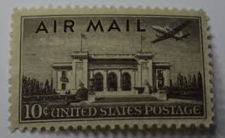 |
| eBay | Single US 10¢ Stamp SC #C34 Air Mail MNH 1947. | eBay | 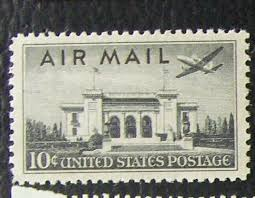 |
| eBay | STAMPS US SCOTT C34 "Pan-Am Union Bldg" 10 CENT USED 1947 | eBay | 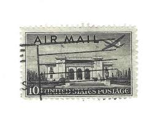 |
| eBay | 10c Pan-American Bldg-Airmail-MNH Single-Scott #C34-Issued 1947 | eBay | 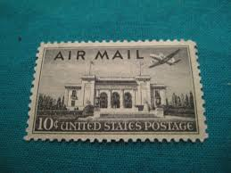 |
| FreeImages | Air Mail Postage Stamp, Usa Stock Photo – Royalty-Free Images | FreeImages | 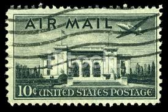 |
| eBay | US Stamps Scott #C34 ~ 1947 10¢ Pan-American Building Airmail RP03 | eBay | 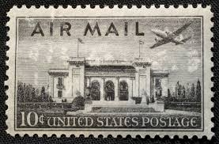 |
| HipStamp | United States Sc#C34 Used, 10c blk, Airmail 1941-1949 (1947) | United States, Air Mail Stamp / HipStamp | |
| eBay | 1947US #C34 10c Pan American Union Building - Air Mail - Mint NH | eBay | |
| What year was the US 10c Airmail stamp featuring the Pan American Union Building issued? | ||
| Dreamstime.com | Stamp Kansas Stock Photos - Free & Royalty-Free Stock Photos from Dreamstime | |
| Etsy | Envío postal por correo aéreo de EE. UU., color negro, sello n.° 1, estado aceptable, bonito color... - Etsy España | |
| Little Postage House | Pan-American Building (10 Cents Each) — Little Postage House | |
| Etsy | 20 Vintage Unused Pan American Pan Am Stamps / Air Mail Washington DC USPS Postage / 10 Cents US - Etsy Australia | |
| sellosmundo.com | Air Mail. United States America ref. 267262 | |
| Flourish Fine Writing | 10 Pan American Building Postage Stamps // UNUSED // 10 Cents // Black – Flourish Fine Writing | |
| eBay | STAMP US SCOTT C34 "Pan-Am Union Bldg" 10 CENT 1947 USED FANCY CANCEL WAVE | eBay | |
| eBay | US 10¢ Stamp Sc #C34 Air Mail MNH 1947 with plate number. | eBay |